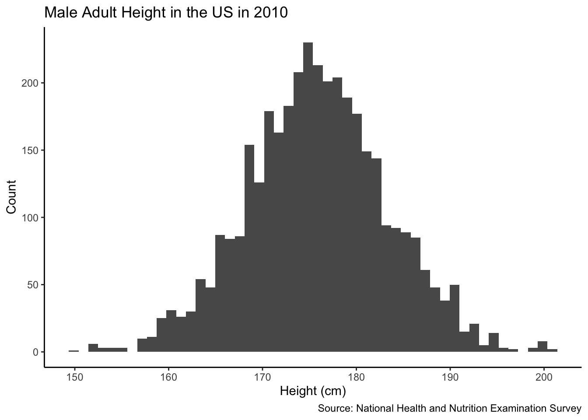
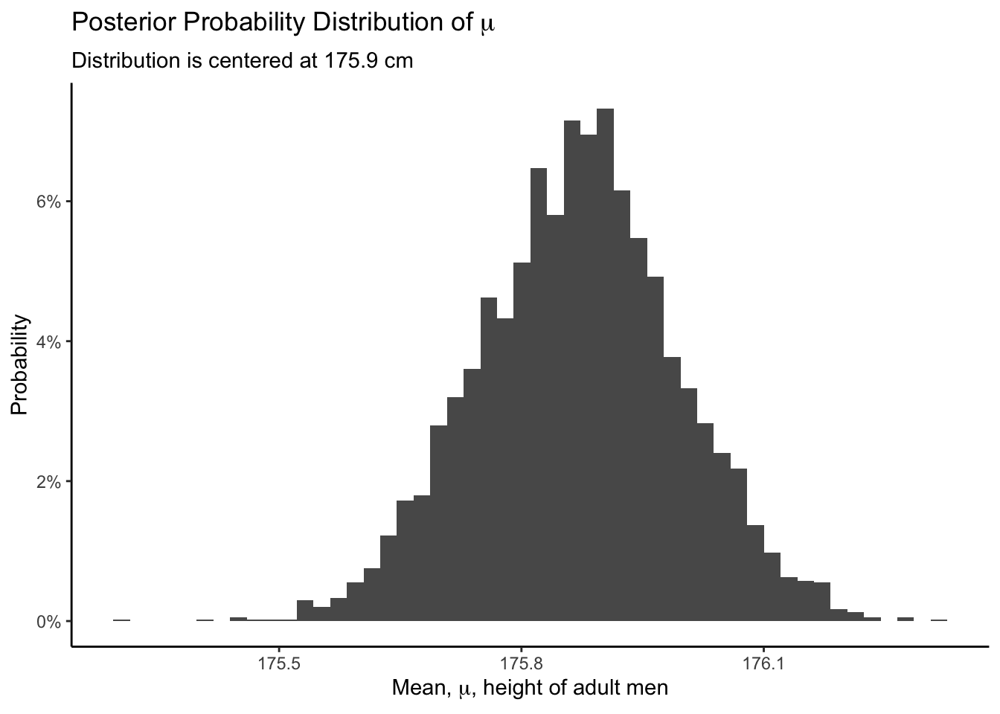
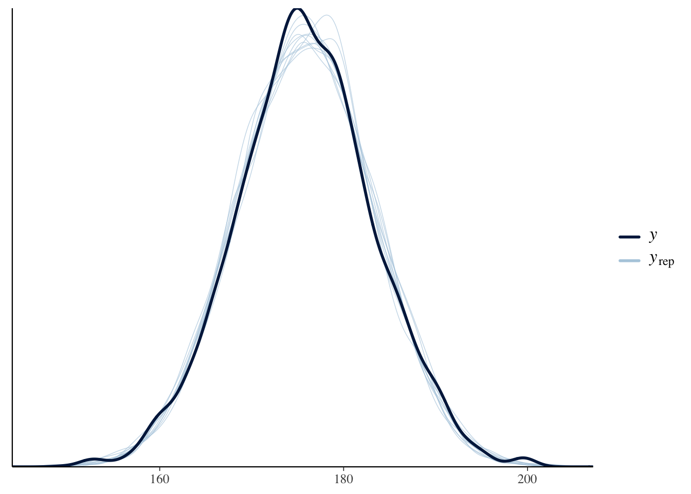
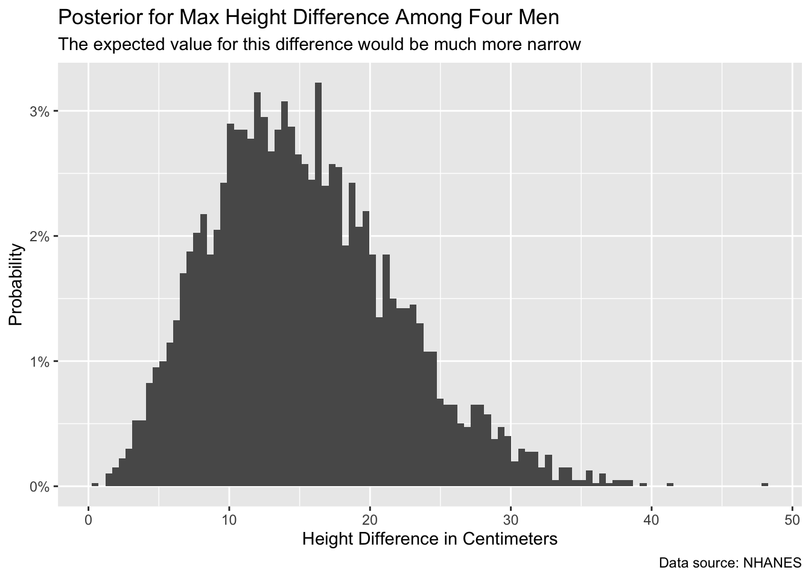
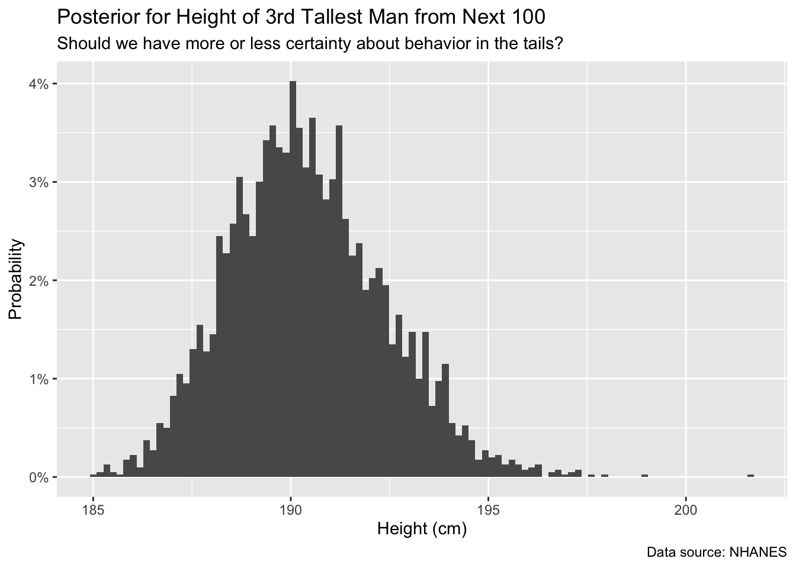

5 Two Parameters
In Chapter 2, we learned how to do inference. We created a joint distribution of the models under consideration and the data which might be observed. Once we observed the data, we went from the joint distribution to the conditional distribution of possible models given the data which we did, in fact, observe. That conditional distribution, suitably normalized, was our posterior probability distribution over the space of possible models. With that distribution, we can answer any question we might (reasonably) ask.
But what a pain in the ass that whole process was! Do professionals actually go through all those steps every time they work on a data science problem? No! That would be absurd. Instead, professionals use standard tools which, in an automated fashion, take care of those steps, taking us directly from assumptions and data to the posterior:
\[\text{Prob}(\text{models} | \text{data} = \text{data we observed})\]
Even then, however, the relative likelihood of different models is not that important. Models are invisible, mental entities with no more physical presence than unicorns or leprechauns. In the world itself, we make and test predictions. People with better models make better predictions. That is what matters.
Chapter 3 used models with just one parameter: \(\rho\), the number of red beads divided by the total number of beads in the bowl. The model in Chapter 3 was binomial, and there was only one unknown parameter, \(\rho\). Chapter 4 did the same thing, but in the more realistic setting in a poll. In this chapter, we have two unknown parameters: the mean \(\mu\) height in the US and the standard deviation, \(\sigma\), of the normally distributed error term.
The reason for making models is not, primarily, that making models is fun – although it is! The reason is that the world confronts us. Make decisions we must. We must decide between options X or Y. We must choose from actions A, B and C. Confronted by a choice, we need to make a model of the world to help us choose wisely.
The real world is complex. Any substantive decision problem includes a great deal of complexity and requires even more context. We do not have the time to get into that level of detail now. So, we simplify. We are going to create a model of height for adult men. We will then use that model to answer three questions:
What is the probability that the next man we meet will be taller than 180 centimeters?
What is the probability that, among the next 4 men we meet, the tallest is at least 10 cm taller than the shortest?
What is our posterior probability distribution for the height of the 3rd tallest man out of the next 100 we meet?
The hope for this chapter is that, by answering these three questions, we’ll gain a better and more thorough understanding of how professionals do data science.
Data science is ultimately a moral act, so we will use the four Cardinal Virtues — Wisdom, Justice, Courage and Temperance — to organize our approach.
5.1 Wisdom

Wisdom begins with the Preceptor Table. What data would we, ideally, require to answer our questions? We then explore the data that we actually have. We apply the concept of validity to ensure that the data we want and the data we have are similar enough to allow the latter to inform us about the former. If so, we describe the population from which both the Preceptor Table and our data are drawn.
5.1.1 Preceptor Table
What rows and columns of data do you need such that, if you had them all, the calculation of the quantity of interest would be trivial? The steps we usually take to construct the Preceptor Table include:
Is the question causal or predictive? If it is causal, then the Preceptor Table will have (at least) two potential outcome columns. If it is predictive, there will just be one outcome column. All our questions are predictive, so there is only one outcome column.
What is the outcome? This is the variable which we are trying to explain/understand/predict. This is not the same thing as the answer to the question we have been asked. The question might, as above, be about the height of the 3rd tallest man we meet out of the next 100. But the concepts of 3rd or 100 do not appear in the Preceptor Table. Instead, height is our outcome variable. But, if we can build a model which explains/understands/predicts height, we can use that model to answer our questions.
What are the units? These are the rows in the Preceptor Table. Sometimes, as here, the units will be fairly obvious: all the men in the world, one row per man. Othertimes, however, we will need to think more deeply about the units to use so that we can most easily answer our question.
What are the covariates? These are the variables, other than the outcome, about which we have information. In the case of causal models, one of the covariates is the treatment, the variable which we can, at least in theory, manipulate in order to observe the different potential outcomes. Predictive models, on the other hand, have no treatments, only covariates.
When is the moment in time to which the Preceptor Table refers? This is often implicit in the question itself. One of our key roles as data scientists is to clarify the questions which we are asked. In this case, it seems clear that the questions refer to now but that won’t always be the case.
In considering the appropriate outcomes, units, covariates and time for the Preceptor Table, we should keep in mind the data that we actually have to answer our questions. We must satisify the assumption of validity if we are to combine the Preceptor Table and our data into a Population Table.
If you want to know the average height of an adult in India, then the Preceptor Table would include a row for each adult in India and a column for their height. Our actual questions above imply that we want to know the average height for men, where “men” includes all males on Earth that are at least 18 years old.
One key aspect of this Preceptor Table is whether or not we need more than one potential outcome in order to calculate our estimand. Mainly: are we are modeling (just) for prediction or are we (also) modeling for causation? Do we need a causal model, one which estimates the outcome under both treatment and control? In a causal model, the Preceptor Table would require two columns for the outcome. In this case, we are not modeling for causation; thus, we do not need two outcome columns.
Predictive models care nothing about causation. Causal models are often also concerned with prediction, if only as a means of measuring the quality of the model. Here, we are looking at prediction.
So, what does our Preceptor Table look like? Assuming we are predicting height for every adult male on planet Earth at this moment in time, we would have height data for every male at least 18 years of age. This means that we would have about 4 billion rows, one for each male, along with a column for each individual’s height.
Here are some rows from our Preceptor Table:
| ID | Height (cm) |
|---|---|
| Person 1 | 150 |
| Person 2 | 172 |
| ... | ... |
| Person 45,000 | 160 |
| Person 45,001 | 142 |
| ... | ... |
This table would extend all the way until person 4 billion-and-something. If we had this table, all of our questions could be answered with simple math and/or simulations. No inference necessary if we have a Preceptor Table. But what does our actual data look like?
5.1.2 EDA for nhanes
In our quest to find suitable data, consider the nhanes data set from the National Health and Nutrition Examination Survey conducted from 2009 to 2011 by the Centers for Disease Control and Prevention.
Rows: 10,000
Columns: 15
$ survey <int> 2009, 2009, 2009, 2009, 2009, 2009, 2009, 2009, 2009, 2…
$ gender <chr> "Male", "Male", "Male", "Male", "Female", "Male", "Male…
$ age <int> 34, 34, 34, 4, 49, 9, 8, 45, 45, 45, 66, 58, 54, 10, 58…
$ race <chr> "White", "White", "White", "Other", "White", "White", "…
$ education <fct> High School, High School, High School, NA, Some College…
$ hh_income <fct> 25000-34999, 25000-34999, 25000-34999, 20000-24999, 350…
$ weight <dbl> 87.4, 87.4, 87.4, 17.0, 86.7, 29.8, 35.2, 75.7, 75.7, 7…
$ height <dbl> 164.7, 164.7, 164.7, 105.4, 168.4, 133.1, 130.6, 166.7,…
$ bmi <dbl> 32.22, 32.22, 32.22, 15.30, 30.57, 16.82, 20.64, 27.24,…
$ pulse <int> 70, 70, 70, NA, 86, 82, 72, 62, 62, 62, 60, 62, 76, 80,…
$ diabetes <int> 0, 0, 0, 0, 0, 0, 0, 0, 0, 0, 0, 0, 0, 0, 0, 0, 0, 0, 0…
$ general_health <int> 3, 3, 3, NA, 3, NA, NA, 4, 4, 4, 4, 4, 2, NA, NA, 3, NA…
$ depressed <fct> Several, Several, Several, NA, Several, NA, NA, None, N…
$ pregnancies <int> NA, NA, NA, NA, 2, NA, NA, 1, 1, 1, NA, NA, NA, NA, NA,…
$ sleep <int> 4, 4, 4, NA, 8, NA, NA, 8, 8, 8, 7, 5, 4, NA, 5, 7, NA,…nhanes includes 15 variables, including physical attributes like weight and height. Let’s restrict our attention to three variables: age, gender and height.
nhanes |>
select(age, gender, height)# A tibble: 10,000 × 3
age gender height
<int> <chr> <dbl>
1 34 Male 165.
2 34 Male 165.
3 34 Male 165.
4 4 Male 105.
5 49 Female 168.
6 9 Male 133.
7 8 Male 131.
8 45 Female 167.
9 45 Female 167.
10 45 Female 167.
# ℹ 9,990 more rowsExamine a random sample:
nhanes |>
select(age, gender, height) |>
slice_sample(n = 5)# A tibble: 5 × 3
age gender height
<int> <chr> <dbl>
1 44 Male 200.
2 15 Male 183.
3 31 Male 176.
4 20 Female 164
5 41 Female 156.We think of both age and height as numbers. And they are numbers! But R distinguishes between “integers” and “doubles,” only the second of which allow for decimal values. In the nhanes data, age is an integer and height is a double.
Rows: 10,000
Columns: 3
$ age <int> 34, 34, 34, 4, 49, 9, 8, 45, 45, 45, 66, 58, 54, 10, 58, 50, 9,…
$ gender <chr> "Male", "Male", "Male", "Male", "Female", "Male", "Male", "Fema…
$ height <dbl> 164.7, 164.7, 164.7, 105.4, 168.4, 133.1, 130.6, 166.7, 166.7, …Be on the lookout for anything suspicious. Are there any NA’s in your data? What types of data are the columns, i.e. why is age characterized as integer instead of double? Are there more females than males?
You can never look at your data too closely.
In addition to glimpse(), we can run skim(), from the skimr package, to calculate summary statistics.
| Name | select(nhanes, age, gende… |
| Number of rows | 10000 |
| Number of columns | 3 |
| _______________________ | |
| Column type frequency: | |
| character | 1 |
| numeric | 2 |
| ________________________ | |
| Group variables | None |
Variable type: character
| skim_variable | n_missing | complete_rate | min | max | empty | n_unique | whitespace |
|---|---|---|---|---|---|---|---|
| gender | 0 | 1 | 4 | 6 | 0 | 2 | 0 |
Variable type: numeric
| skim_variable | n_missing | complete_rate | mean | sd | p0 | p25 | p50 | p75 | p100 | hist |
|---|---|---|---|---|---|---|---|---|---|---|
| age | 0 | 1.00 | 36.74 | 22.40 | 0.0 | 17.0 | 36 | 54.0 | 80.0 | ▇▇▇▆▅ |
| height | 353 | 0.96 | 161.88 | 20.19 | 83.6 | 156.8 | 166 | 174.5 | 200.4 | ▁▁▁▇▂ |
Interesting! There are 353 missing values of height in our subset of data. Just using glimpse() does not show us that. Let’s filter out the NA’s using drop_na(). This will delete the rows in which the value of any variable is missing. Because we want to examine height in men (not boys, nor females), let’s limit our data to only include adult males.
Let’s plot this data using geom_histogram().
Show the code
ch4 |>
ggplot(aes(x = height)) +
geom_histogram(bins = 50) +
labs(title = "Male Adult Height in the US in 2010",
x = "Height (cm)",
y = "Count",
caption = "Source: National Health and Nutrition Examination Survey"
) +
theme_classic()
Will the data we have — which is only for a sample of adult American men more than a decade ago — allow us to answer our questions, however roughly? Only if the assumption of validity makes sense.
5.1.3 Validity
Validity involves our columns. More specifically, whether our columns mean the same thing. Does “height” in our Preceptor Table mean the same thing as “height” in NHANES? Almost certainly. Of course, we need to be careful about mistakes like measurement units, like centimeters in one and inches in the other. And there can be issues like: Are measurements taken with shoes on or shoes off? But, for the most part, the “height” variable in NHANES in 2010 is a valid proxy for the “height” of individuals today. We can stack the two data sets together and consider them to have come from the same population.
Since validity holds, we can combine the Preceptor Table and our data into a Population Table.
5.1.4 Population
One of the most important components of Wisdom is the concept of the “population.”
The population is not the set of people for which we have data — the participants in the CDC’s Health and Nutrition Examination Survey conducted from 2009 to 2011. This is the dataset. Nor is it the set of all the individuals about whom we would like to have data. Those are the rows in the Preceptor Table. The population is the larger — potentially much larger — set of individuals which include both the data we have and the data we want. Generally, the population will be much larger than either the data we have or the data we want. In fact, there is almost always a time dimension to consider. We generally want to make inferences about right now or about the future. By definition, the data we have is always from the past.
In this case, we want to estimate average height for males today, not for people in 2009 – 2011. We also want to estimate height for males outside the United States, a group that is excluded from our dataset. Is it reasonable to generate conclusions for the world from this group? Maybe? We have limited data to work with and we have to determine how far we are willing to generalize to other groups.
It is a judgment call, a matter of Wisdom, as to whether or not we may assume that the data we have and the data we want to have (i.e., the Preceptor Table) are drawn from the same population.
In the social sciences, there is never a perfect relationship between the data you have and the question you are trying to answer. Data for American males in the past is not the same thing as data for American males today. Nor is it the same as the data for men in France or Mexico. Yet, this data is relevant. Right? It is certainly better than nothing.
Using not-perfect data is generally better than using no data at all.
Is not-perfect data always better? No! If your problem is estimating the median height of 5th grade girls in Tokyo, we doubt that our data is at all relevant. Wisdom recognizes the danger of using non-relevant data to build a model and then mistakenly using that model in a way which will only make the situation worse. If the data won’t help, don’t use the data, don’t build a model. Better to just use your common sense and experience. Or find better data.
5.2 Justice

Having looked at our data and decided that it is “close enough” to our questions that creating a model will help us come up with better answers, we move on to Justice.
Justice emphasizes a few key concepts:
The Population Table, a structure which includes a row for every unit in the population. We generally break the rows in the Population Table into three categories: the data for units we want to have (the Preceptor Table), the data for units which we actually have (our actual data), and the data for units we do not care about (the rest of the population, not included in the data or the Preceptor Table).
Stability means that the relationship between the columns in the Population Table is the same for three categories of rows: the data, the Preceptor Table, and the larger population from which both are drawn.
Representativeness, or the lack thereof, concerns two relationship, among the rows in the Population Table. The first is between the Preceptor Table and the other rows. The second is between our data and the other rows. Ideally, we would like both the Preceptor Table and our data to be random samples from the population. Sadly, this is almost never the case.
Unconfoundedness means that the treatment assignment is independent of the potential outcomes, when we condition on pre-treatment covariates. This assumption is only relevant for causal models. We write that a model is “confounded” if this is not true. The easiest way to ensure unconfoundedness is to randonly assign treatment.
The mathematical structure of the Data Generating Mechanism. Models require math, so we need to create a mathematical formula which connects our outcome to our covariates.
5.2.1 The Population Table
The Population Table shows rows from three sources: the Preceptor Table, the actual data, and the population (outside of the data).
Our Preceptor Table rows contain the information that we would want to know in order to answer our questions. These rows contain entries for our covariates (sex and year) but they do not contain any outcome results (height). We are trying to answer questions about the male population in 2024, so our sex entries for these rows will read “Male” and our year entries of these rows will read “2024”.
Our actual data rows contain the information that we do know. These rows contain entries for both our covariates and the outcomes. In this case, the actual data comes from a study conducted on males in 2009-2011, so our sex entries for these rows will read “Male” and our year entries of these rows will either read “2009”, “2010”, or “2011”.
Our other rows contain no data. These are subjects which fall under our desired population, but for which we have no data. As such, all outcomes and covariates are missing. (A subtle point is that, even for other data, we “know” the ID and the Year for each subject. Of course, we don’t really know these things, but, conceptually, we are defining the meaning of those rows on the basis of those variables.)
| Source | Sex | Year | Height |
|---|---|---|---|
Preceptor Table |
Male |
2024 |
? |
Preceptor Table |
Male |
2024 |
? |
… |
… |
… |
… |
Actual Data |
Male |
2009 |
180 |
Actual Data |
Male |
2011 |
160 |
Actual Data |
Male |
2010 |
168 |
… |
… |
… |
… |
Other |
? |
? |
? |
Other |
? |
? |
? |
Other |
? |
? |
? |
5.2.2 Representativeness
Representativeness involves the rows of the Population Table. More specifically, are the rows that we do have data for representative of the rows for which we do not have data? Ideally, the data we have is a random, unbiased selection from our population, and so the answer to our question is yes.
For our nhanes data, is this the case? It is time to investigate.
According to the CDC, individuals are invited to participate in NHANES based on a randomized process. First, the United States is divided into a number of geographical groups (to ensure counties from all areas). From each of these groups, counties are randomly selected to participate. After a county has been randomly selected, members of the households in that county are notified of the upcoming survey, and must volunteer their time to participate. It is clear that this process goes through several layers of randomization (promising!). That being said, many counties are excluded by the end of the process. It is also possible for certain groups or communities to be less representative of the greater population, though we cannot know that for certain.
There is also the fact that participation is voluntary. Perhaps certain individuals (immobile, elderly, anxious) are less likely to participate. Perhaps individuals that are hospitalized do not get the opportunity to participate. This impacts our data!
5.3 Courage

In data science, we deal with words, math, and code, but the most important of these is code. We need Courage to create the model, to take the leap of faith that we can make our ideas real.
Justice gave us the Population Table. Courage selects the data generating mechanism. We first specify the mathematical formula which connects the outcome variable we are interested in with the other data that we have. We explore different models. We need to decide which variables to include and to estimate the values of unknown parameters. We check our models for consistency with the data we have. We avoid hypothesis tests. We select one model.
We use a simple linear model:
\[ y_i = \mu + \epsilon_i \]
with \(\epsilon_i \sim N(0, \sigma^2)\). \(y_i\) is the height of male \(i\). \(\mu\) is the average height of all males in the population. \(\epsilon_i\) is the “error term,” the difference between the height of male \(i\) and the average height of all males.
\(\epsilon_i\) is normally distributed with a mean of 0 and a standard deviation of \(\sigma\). The mean being 0 relates to our concept of accuracy; we are assuming that our data is representative enough to be accurate, and so we can expect our average error to be 0. The standard deviation, on the other hand, relates to our concept of precision; the smaller \(\sigma\) is, the more precise our data is, and the larger \(\sigma\) is, the less precise our data is.
This is the simplest model we can construct. Note:
- The model has two unknown parameters: \(\mu\) and \(\sigma\). Before we can do anything else we need to estimate the values of these parameters. Can we ever know their exact value? No! Perfection lies only in God’s own R code. But, by using a Bayesian approach similar to what we used in Chapters Chapter 2 and Chapter 4, we will be able to create a posterior probability distribution for each parameter.
The model is wrong, as are all models.
The parameter we most care about is \(\mu\). That is the parameter with a substantively meaningful interpretation. Not only is the meaning of \(\sigma\) difficult to describe, we also don’t particular care about its value. Parameters like \(\sigma\) in this context are nuisance or auxiliary parameters. We still estimate their posterior distributions, but we don’t really care what those posteriors look like.
\(\mu\) is not the average height of the men in the sample. We can calculate that directly. It is 175.870667. No estimation required! Instead, \(\mu\) is the average height of men in the population. Recall from the discussions in Chapter 4 that the population is the universe of people/units/whatever about which we seek to draw conclusions. On some level, this seems simple. On a deeper level, it is very subtle. For example, if we are walking around Copenhagen, then the population we really care about, in order to answer our three questions, is the set of adult men which we might meet today. This is not the same as the population of adult men in the US in 2010. But is it close enough? Is it better than nothing? We want to assume that both men from
nhanes(the data we have) and men we meet in Copenhagen today (the data we want to have) are drawn from the same population. Each case is a different and the details matter.\(\sigma\) is an estimate for the standard deviation of the errors, i.e., variability in height after accounting for the mean.
5.3.1 Models
Let’s estimate a simple version of the model. First, we need to load the brms and tidybayes packages.
Because we are estimating a linear model, we begin with:
Running /Library/Frameworks/R.framework/Resources/bin/R CMD SHLIB foo.c
using C compiler: ‘Apple clang version 15.0.0 (clang-1500.1.0.2.5)’
using SDK: ‘MacOSX14.2.sdk’
clang -arch arm64 -I"/Library/Frameworks/R.framework/Resources/include" -DNDEBUG -I"/Users/dkane/Library/Caches/org.R-project.R/R/renv/cache/v5/R-4.3/aarch64-apple-darwin20/Rcpp/1.0.12/5ea2700d21e038ace58269ecdbeb9ec0/Rcpp/include/" -I"/Users/dkane/Desktop/projects/primer/renv/library/R-4.3/aarch64-apple-darwin20/RcppEigen/include/" -I"/Users/dkane/Desktop/projects/primer/renv/library/R-4.3/aarch64-apple-darwin20/RcppEigen/include/unsupported" -I"/Users/dkane/Desktop/projects/primer/renv/library/R-4.3/aarch64-apple-darwin20/BH/include" -I"/Users/dkane/Library/Caches/org.R-project.R/R/renv/cache/v5/R-4.3/aarch64-apple-darwin20/StanHeaders/2.32.5/b8d6850ef3e330bc108e712679e79443/StanHeaders/include/src/" -I"/Users/dkane/Library/Caches/org.R-project.R/R/renv/cache/v5/R-4.3/aarch64-apple-darwin20/StanHeaders/2.32.5/b8d6850ef3e330bc108e712679e79443/StanHeaders/include/" -I"/Users/dkane/Library/Caches/org.R-project.R/R/renv/cache/v5/R-4.3/aarch64-apple-darwin20/RcppParallel/5.1.7/a45594a00f5dbb073d5ec9f48592a08a/RcppParallel/include/" -I"/Users/dkane/Library/Caches/org.R-project.R/R/renv/cache/v5/R-4.3/aarch64-apple-darwin20/rstan/2.32.5/378a10b6373822761ec78021c105b059/rstan/include" -DEIGEN_NO_DEBUG -DBOOST_DISABLE_ASSERTS -DBOOST_PENDING_INTEGER_LOG2_HPP -DSTAN_THREADS -DUSE_STANC3 -DSTRICT_R_HEADERS -DBOOST_PHOENIX_NO_VARIADIC_EXPRESSION -D_HAS_AUTO_PTR_ETC=0 -include '/Users/dkane/Library/Caches/org.R-project.R/R/renv/cache/v5/R-4.3/aarch64-apple-darwin20/StanHeaders/2.32.5/b8d6850ef3e330bc108e712679e79443/StanHeaders/include/stan/math/prim/fun/Eigen.hpp' -D_REENTRANT -DRCPP_PARALLEL_USE_TBB=1 -I/opt/R/arm64/include -fPIC -falign-functions=64 -Wall -g -O2 -c foo.c -o foo.o
In file included from <built-in>:1:
In file included from /Users/dkane/Library/Caches/org.R-project.R/R/renv/cache/v5/R-4.3/aarch64-apple-darwin20/StanHeaders/2.32.5/b8d6850ef3e330bc108e712679e79443/StanHeaders/include/stan/math/prim/fun/Eigen.hpp:22:
In file included from /Users/dkane/Desktop/projects/primer/renv/library/R-4.3/aarch64-apple-darwin20/RcppEigen/include/Eigen/Dense:1:
In file included from /Users/dkane/Desktop/projects/primer/renv/library/R-4.3/aarch64-apple-darwin20/RcppEigen/include/Eigen/Core:88:
/Users/dkane/Desktop/projects/primer/renv/library/R-4.3/aarch64-apple-darwin20/RcppEigen/include/Eigen/src/Core/util/Macros.h:628:1: error: unknown type name 'namespace'
namespace Eigen {
^
/Users/dkane/Desktop/projects/primer/renv/library/R-4.3/aarch64-apple-darwin20/RcppEigen/include/Eigen/src/Core/util/Macros.h:628:16: error: expected ';' after top level declarator
namespace Eigen {
^
;
In file included from <built-in>:1:
In file included from /Users/dkane/Library/Caches/org.R-project.R/R/renv/cache/v5/R-4.3/aarch64-apple-darwin20/StanHeaders/2.32.5/b8d6850ef3e330bc108e712679e79443/StanHeaders/include/stan/math/prim/fun/Eigen.hpp:22:
In file included from /Users/dkane/Desktop/projects/primer/renv/library/R-4.3/aarch64-apple-darwin20/RcppEigen/include/Eigen/Dense:1:
/Users/dkane/Desktop/projects/primer/renv/library/R-4.3/aarch64-apple-darwin20/RcppEigen/include/Eigen/Core:96:10: fatal error: 'complex' file not found
#include <complex>
^~~~~~~~~
3 errors generated.
make: *** [foo.o] Error 1
SAMPLING FOR MODEL 'anon_model' NOW (CHAIN 1).
Chain 1:
Chain 1: Gradient evaluation took 0.00015 seconds
Chain 1: 1000 transitions using 10 leapfrog steps per transition would take 1.5 seconds.
Chain 1: Adjust your expectations accordingly!
Chain 1:
Chain 1:
Chain 1: Iteration: 1 / 2000 [ 0%] (Warmup)
Chain 1: Iteration: 200 / 2000 [ 10%] (Warmup)
Chain 1: Iteration: 400 / 2000 [ 20%] (Warmup)
Chain 1: Iteration: 600 / 2000 [ 30%] (Warmup)
Chain 1: Iteration: 800 / 2000 [ 40%] (Warmup)
Chain 1: Iteration: 1000 / 2000 [ 50%] (Warmup)
Chain 1: Iteration: 1001 / 2000 [ 50%] (Sampling)
Chain 1: Iteration: 1200 / 2000 [ 60%] (Sampling)
Chain 1: Iteration: 1400 / 2000 [ 70%] (Sampling)
Chain 1: Iteration: 1600 / 2000 [ 80%] (Sampling)
Chain 1: Iteration: 1800 / 2000 [ 90%] (Sampling)
Chain 1: Iteration: 2000 / 2000 [100%] (Sampling)
Chain 1:
Chain 1: Elapsed Time: 0.336 seconds (Warm-up)
Chain 1: 0.248 seconds (Sampling)
Chain 1: 0.584 seconds (Total)
Chain 1:
SAMPLING FOR MODEL 'anon_model' NOW (CHAIN 2).
Chain 2:
Chain 2: Gradient evaluation took 5.8e-05 seconds
Chain 2: 1000 transitions using 10 leapfrog steps per transition would take 0.58 seconds.
Chain 2: Adjust your expectations accordingly!
Chain 2:
Chain 2:
Chain 2: Iteration: 1 / 2000 [ 0%] (Warmup)
Chain 2: Iteration: 200 / 2000 [ 10%] (Warmup)
Chain 2: Iteration: 400 / 2000 [ 20%] (Warmup)
Chain 2: Iteration: 600 / 2000 [ 30%] (Warmup)
Chain 2: Iteration: 800 / 2000 [ 40%] (Warmup)
Chain 2: Iteration: 1000 / 2000 [ 50%] (Warmup)
Chain 2: Iteration: 1001 / 2000 [ 50%] (Sampling)
Chain 2: Iteration: 1200 / 2000 [ 60%] (Sampling)
Chain 2: Iteration: 1400 / 2000 [ 70%] (Sampling)
Chain 2: Iteration: 1600 / 2000 [ 80%] (Sampling)
Chain 2: Iteration: 1800 / 2000 [ 90%] (Sampling)
Chain 2: Iteration: 2000 / 2000 [100%] (Sampling)
Chain 2:
Chain 2: Elapsed Time: 0.292 seconds (Warm-up)
Chain 2: 0.226 seconds (Sampling)
Chain 2: 0.518 seconds (Total)
Chain 2:
SAMPLING FOR MODEL 'anon_model' NOW (CHAIN 3).
Chain 3:
Chain 3: Gradient evaluation took 6.4e-05 seconds
Chain 3: 1000 transitions using 10 leapfrog steps per transition would take 0.64 seconds.
Chain 3: Adjust your expectations accordingly!
Chain 3:
Chain 3:
Chain 3: Iteration: 1 / 2000 [ 0%] (Warmup)
Chain 3: Iteration: 200 / 2000 [ 10%] (Warmup)
Chain 3: Iteration: 400 / 2000 [ 20%] (Warmup)
Chain 3: Iteration: 600 / 2000 [ 30%] (Warmup)
Chain 3: Iteration: 800 / 2000 [ 40%] (Warmup)
Chain 3: Iteration: 1000 / 2000 [ 50%] (Warmup)
Chain 3: Iteration: 1001 / 2000 [ 50%] (Sampling)
Chain 3: Iteration: 1200 / 2000 [ 60%] (Sampling)
Chain 3: Iteration: 1400 / 2000 [ 70%] (Sampling)
Chain 3: Iteration: 1600 / 2000 [ 80%] (Sampling)
Chain 3: Iteration: 1800 / 2000 [ 90%] (Sampling)
Chain 3: Iteration: 2000 / 2000 [100%] (Sampling)
Chain 3:
Chain 3: Elapsed Time: 0.32 seconds (Warm-up)
Chain 3: 0.272 seconds (Sampling)
Chain 3: 0.592 seconds (Total)
Chain 3:
SAMPLING FOR MODEL 'anon_model' NOW (CHAIN 4).
Chain 4:
Chain 4: Gradient evaluation took 5.9e-05 seconds
Chain 4: 1000 transitions using 10 leapfrog steps per transition would take 0.59 seconds.
Chain 4: Adjust your expectations accordingly!
Chain 4:
Chain 4:
Chain 4: Iteration: 1 / 2000 [ 0%] (Warmup)
Chain 4: Iteration: 200 / 2000 [ 10%] (Warmup)
Chain 4: Iteration: 400 / 2000 [ 20%] (Warmup)
Chain 4: Iteration: 600 / 2000 [ 30%] (Warmup)
Chain 4: Iteration: 800 / 2000 [ 40%] (Warmup)
Chain 4: Iteration: 1000 / 2000 [ 50%] (Warmup)
Chain 4: Iteration: 1001 / 2000 [ 50%] (Sampling)
Chain 4: Iteration: 1200 / 2000 [ 60%] (Sampling)
Chain 4: Iteration: 1400 / 2000 [ 70%] (Sampling)
Chain 4: Iteration: 1600 / 2000 [ 80%] (Sampling)
Chain 4: Iteration: 1800 / 2000 [ 90%] (Sampling)
Chain 4: Iteration: 2000 / 2000 [100%] (Sampling)
Chain 4:
Chain 4: Elapsed Time: 0.293 seconds (Warm-up)
Chain 4: 0.244 seconds (Sampling)
Chain 4: 0.537 seconds (Total)
Chain 4: Note:
There is a direct connection between the mathematical form of the model created under Justice and the code we use to fit the model under Courage.
height ~ 1is the code equivalent of \(y_i = \mu\).Setting
family = gaussian()implies that \(\epsilon_i \sim N(0, \sigma^2)\), just as we assumed. That is not a coincidence! If \(\epsilon_i\) had a different distribution, we would need to use a different statistical family.There are several ways to examine the fitted model. The simplest is to print it. Recall that just typing
xat the prompt is the same as writingprint(x).
fit_1 Family: gaussian
Links: mu = identity; sigma = identity
Formula: height ~ 1
Data: ch4 (Number of observations: 3658)
Draws: 4 chains, each with iter = 2000; warmup = 1000; thin = 1;
total post-warmup draws = 4000
Population-Level Effects:
Estimate Est.Error l-95% CI u-95% CI Rhat Bulk_ESS Tail_ESS
Intercept 175.87 0.13 175.62 176.12 1.00 2722 2705
Family Specific Parameters:
Estimate Est.Error l-95% CI u-95% CI Rhat Bulk_ESS Tail_ESS
sigma 7.48 0.09 7.31 7.66 1.00 3379 2169
Draws were sampled using sampling(NUTS). For each parameter, Bulk_ESS
and Tail_ESS are effective sample size measures, and Rhat is the potential
scale reduction factor on split chains (at convergence, Rhat = 1).Note:
We will be looking at this print out many times in the rest of the Primer. You will get used to it. The header information about Family, Links and so on just confirms what we already know. Still, you want to check this to make sure you did not make a mistake in the call to
brm().The key parameter is the “Intercept,” which is the same thing as \(\mu\) in the mathematical description of the model and the same thing as
1when we setformula = height ~ 1. In other words, we are speaking three languages here: English (“Intercept”), math ($mu$), and code (height ~ 1). But all three languages are referring to the same underlying concept.The “Estimate” of 175.87 makes sense. After all, the simple mean of the
heightin the data is:
mean(ch4$height)[1] 175.8707- The estimated error (“Est.Error”) also makes sense. This is the standard error and can be calculated by hand as the standard deviation of the data divided by the squart root of the number of observations:
The end points of the confidence intervals are simply the estimate \(\pm\) two times the standard error.
We don’t really care about the values associated with sigma, which has no physical meaning. Parameters like this are often referred to as “nuisance” parameters because, although they are necessary to constructing the fitted model, we don’t really care about them outside that context. The Intercept, on the other hand, is the mean of our posterior distribution for the unknown parameter \(\mu\), the average height of an adult male.
Consider the posterior distribution of \(\mu\).
fit_1 |>
add_epred_draws(newdata = tibble(.rows = 1)) |>
ggplot(aes(x = .epred)) +
geom_histogram(aes(y = after_stat(count/sum(count))),
bins = 50) +
labs(title = expression(paste("Posterior Probability Distribution of ", mu)),
subtitle = "Distribution is centered at 175.9 cm",
x = expression(paste("Mean, ", mu, ", height of adult men")),
y = "Probability") +
scale_x_continuous(labels = scales::number_format()) +
scale_y_continuous(labels = scales::percent_format()) +
theme_classic()
This is almost exactly the same code as we used in ?sec-modeling. It is the same code which we will use in the future.
5.3.2 Data Generating Mechanism
We modeled height, a continuous variable measured in centimeters, as a linear function of a constant term. The average adult male height in the US was around 176 cm. Mathematically:
\[ height_i = 176 + \epsilon_i \]
with \(\epsilon_i \sim N(0, 0.75^2)\).
5.3.3 Tests
Before excepting fit_1 as our data generating mechanism, we should perform a posterior predictive check.
Show the code
brms::pp_check(fit_1)Using 10 posterior draws for ppc type 'dens_overlay' by default.
Note how similar our actual data, \(y\), is to the 10 versions of the replicated data, \(y_rep\). They are close enough that we are happy to use fit_1. However, the match is not perfect! The actual data is slightly more “peaked” and also features some weird bumps in the tails, especially around 200 cm. It would be possible, but not easy, to modify our model to match the actual data more closely. For now, we will just accept fit_1 as our data generating mechanism.
5.4 Temperance

We have a data generating mechanism, a “model,” to use the simpler term. What can we do with it? Let’s answer the four questions with which we started.
5.4.1 Question 1
- What is the probability that the next adult male we meet will be taller than 180 centimeters?
There are two fundamentally different kinds of unknowns which we care about: expected values and predicted values. With the former, we are not interested in any specific individual. The individual value is irrelevant. With predicted values, we care, not about the average, but about this specific person. With the former, we use add_epred_draws(). With the latter, the relevant function is add_predicted_draws(). Both functions return draws from a posterior probability distribution, but the unknown number which underlies the posterior are very different.
Recall the mathematics:
\[ y_i = \mu + \epsilon_i \]
With expected values or averages, we can ignore the \(\epsilon_i\) term in this formula. The expected value of \(\epsilon_i\) is zero since, by assumption, \(\epsilon_i \sim N(0, \sigma^2)\). However, we can’t ignore \(\epsilon_i\) when predicting the height for a single individual.
fit_1 |>
add_predicted_draws(newdata = tibble(.rows = 1))# A tibble: 4,000 × 5
# Groups: .row [1]
.row .chain .iteration .draw .prediction
<int> <int> <int> <int> <dbl>
1 1 NA NA 1 177.
2 1 NA NA 2 188.
3 1 NA NA 3 177.
4 1 NA NA 4 178.
5 1 NA NA 5 177.
6 1 NA NA 6 193.
7 1 NA NA 7 168.
8 1 NA NA 8 193.
9 1 NA NA 9 172.
10 1 NA NA 10 173.
# ℹ 3,990 more rowsAs before, it is straightforward to turn draws from the posterior probability distribution into a graphic:
fit_1 |>
add_predicted_draws(newdata = tibble(.rows = 1)) |>
ggplot(aes(x = .prediction)) +
geom_histogram(aes(y = after_stat(count/sum(count))),
bins = 100) +
labs(title = "Posterior for Height of Random Male",
subtitle = "Uncertainty for a single individual is much greater than for the expected value",
x = "Height (cm)",
y = "Probability",
caption = "Data source: NHANES") +
scale_x_continuous(labels = scales::number_format()) +
scale_y_continuous(labels = scales::percent_format(accuracy = 1)) +
theme_classic()
Note:
The posterior for an individual is much wider than the posterior for the expected value.
Eyeballing, seems like there is a 1 out of 3 chance that the next man we meet, or any randomly chosen man, is taller than 180 cm.
We can calculate the exact probability by manipulating the tibble of draws directly.
fit_1 |>
add_predicted_draws(newdata = tibble(.rows = 1)) |>
mutate(tall = if_else(.prediction > 180, TRUE, FALSE)) |>
summarize(odds = mean(tall))# A tibble: 1 × 2
.row odds
<int> <dbl>
1 1 0.301If 30% or so of the draws from the posterior probability distribution are greater than 180 cm, then there is about a 30% chance that the next individual will be taller than 180 cm.
Again, the key conceptual difficulty is the population. The problem we actually have involves walking around London, or wherever, today. The data we have involve America in 2010. Those are not the same things! But they are not totally different. Knowing whether the data we have is “close enough” to the problem we want to solve is at the heart of Wisdom. Yet that was the decision we made at the start of the process, the decision to create a model in the first place. Now that we have created a model, we look to the virtue of Temperance for guidance in using that model. The data we have is never a perfect match for the world we face. We need to temper our confidence and act with humility. Our forecasts will never be as good as a naive use of the model might suggest. Reality will surprise us. We need to take the model’s claims with a family-sized portion of salt.
5.4.2 Question 2
- What is the probability that, among the next 4 men we meet, the tallest is at least 10 cm taller than the shortest?
Bayesian models are beautiful because, via the magic of simulation, we can answer (almost!) any question. Because the question is about four random individuals, we need add_predicted_draws() to give us four sets of draws from four identical posterior probability distributions. All we need to do is to change 1 to 4 in our previous code and then widen the data. If you need to predict X individuals, then you need a tibble with X rows, regardless of whether or not those rows are otherwise identical.
fit_1 |>
add_predicted_draws(newdata = tibble(.rows = 4)) |>
select(.row, .draw, .prediction) |>
pivot_wider(values_from = .prediction, names_from = .row)# A tibble: 4,000 × 5
.draw `1` `2` `3` `4`
<int> <dbl> <dbl> <dbl> <dbl>
1 1 184. 186. 176. 170.
2 2 179. 182. 176. 180.
3 3 177. 176. 171. 181.
4 4 180. 162. 178. 178.
5 5 172. 164. 178. 181.
6 6 169. 175. 182. 173.
7 7 181. 163. 181. 176.
8 8 173. 174. 183. 195.
9 9 180. 174. 170. 169.
10 10 179. 177. 189. 175.
# ℹ 3,990 more rowsAgain, we have the subtle issue. In the same way that light is both a wave and a particle, these columns are both posteriors and draws from those posteriors, when considered row by row. In each row, we are running an experiment in which we meet 4 men. We measure their heights, we determine if the tallest is more than 10 centimeters taller than the shortest. We then do the same thing is row 2, row 3 and so on. The functions row_wise() and c_across() make this (mostly) simple.
draws <- fit_1 |>
add_predicted_draws(newdata = tibble(.rows = 4)) |>
select(.row, .draw, .prediction) |>
pivot_wider(values_from = .prediction, names_from = .row) |>
rowwise() %>%
mutate(diff = max(c_across(`1`:`4`)) - min(c_across(`1`:`4`)))
draws# A tibble: 4,000 × 6
# Rowwise:
.draw `1` `2` `3` `4` diff
<int> <dbl> <dbl> <dbl> <dbl> <dbl>
1 1 186. 177. 179. 180. 9.21
2 2 179. 165. 178. 174. 14.0
3 3 177. 172. 185. 172. 13.3
4 4 173. 172. 164. 176. 11.5
5 5 168. 165. 179. 169. 13.9
6 6 162. 164. 166. 184. 21.9
7 7 179. 168. 176. 166. 13.3
8 8 176. 175. 180. 168. 11.6
9 9 183. 181. 176. 176. 6.74
10 10 163. 168. 176. 178. 14.8
# ℹ 3,990 more rowsUnfortunately, this code can take a while to run, so we save the results in a permanent tibble named draws. This will be a common approach, just as we have saved the fitted model object as fit_1, or whatever, rather than recreating it each time.
The next step is to calculate the number of interest. We can not, directly, draw the height of the tallest or shortest out of 4 random men. However, having drawn 4 random men, we can calculate those numbers, and the difference between them.
These steps serve as a template for much of the analysis we do later. It is often very hard to create a model directly of the thing we want to know. There is no easy way to create a model which estimates this height difference directly. It is easy, however, to create a model which allows for random draws.
Give us enough random draws, and a tibble in which to store them, and we can estimate the world.
Once we have random draws from the posterior distribution we care about, graphing the posterior probability distribution is the same-old, same-old.
Show the code
draws %>%
mutate(diff = max(c_across(`1`:`4`)) - min(c_across(`1`:`4`))) |>
ggplot(aes(x = diff)) +
geom_histogram(aes(y = after_stat(count/sum(count))),
bins = 100) +
labs(title = "Posterior for Max Height Difference Among Four Men",
subtitle = "The expected value for this difference would be much more narrow",
x = "Height Difference in Centimeters",
y = "Probability",
caption = "Data source: NHANES") +
scale_x_continuous(breaks = seq(0, 50, 10),
labels = scales::number_format()) +
scale_y_continuous(labels = scales::percent_format()) 
There is about an 78% chance that, when meeting 4 random men, the tallest will be at least 10 cm taller than the shortest. Exact calculation:
5.4.3 Question 4
- What is our posterior probability distribution of the height of the 3rd tallest man out of the next 100 we meet?
The same approach will work for almost any question.
fit_1 |>
add_predicted_draws(newdata = tibble(.rows = 100)) |>
select(.row, .draw, .prediction) |>
pivot_wider(values_from = .prediction, names_from = .row)# A tibble: 4,000 × 101
.draw `1` `2` `3` `4` `5` `6` `7` `8` `9` `10` `11` `12`
<int> <dbl> <dbl> <dbl> <dbl> <dbl> <dbl> <dbl> <dbl> <dbl> <dbl> <dbl> <dbl>
1 1 183. 171. 173. 181. 179. 172. 176. 171. 165. 167. 168. 175.
2 2 176. 201. 181. 175. 172. 178. 178. 172. 166. 178. 179. 189.
3 3 180. 174. 166. 171. 172. 178. 175. 174. 180. 169. 172. 171.
4 4 173. 168. 172. 183. 171. 181. 170. 188. 187. 166. 177. 169.
5 5 174. 179. 172. 169. 179. 174. 181. 193. 200. 183. 169. 173.
6 6 168. 186. 176. 176. 165. 169. 184. 179. 169. 186. 187. 186.
7 7 169. 185. 183. 175. 183. 174. 167. 178. 179. 184. 176. 176.
8 8 172. 174. 173. 171. 171. 172. 176. 181. 172. 174. 182. 172.
9 9 173. 173. 179. 163. 170. 179. 175. 161. 172. 182. 168. 171.
10 10 169. 177. 163. 169. 173. 174. 172. 196. 166. 170. 174. 183.
# ℹ 3,990 more rows
# ℹ 88 more variables: `13` <dbl>, `14` <dbl>, `15` <dbl>, `16` <dbl>,
# `17` <dbl>, `18` <dbl>, `19` <dbl>, `20` <dbl>, `21` <dbl>, `22` <dbl>,
# `23` <dbl>, `24` <dbl>, `25` <dbl>, `26` <dbl>, `27` <dbl>, `28` <dbl>,
# `29` <dbl>, `30` <dbl>, `31` <dbl>, `32` <dbl>, `33` <dbl>, `34` <dbl>,
# `35` <dbl>, `36` <dbl>, `37` <dbl>, `38` <dbl>, `39` <dbl>, `40` <dbl>,
# `41` <dbl>, `42` <dbl>, `43` <dbl>, `44` <dbl>, `45` <dbl>, `46` <dbl>, …Again, we have 100 (identical) posteriors, each representing the height of a random adult male. Each column is a posterior. (In later models, the columns will represent different posteriors, but we keep things simple for now.) Each row can then be viewed as an experiment. Instead of just meeting one random man, however, we meet 100. Draws from a posterior are the same thing as one random unit from the underlying population.
The magic of rowwise()and c_across() allows us to easily determine the height of the tallest man out of 100.
draws <- fit_1 |>
add_predicted_draws(newdata = tibble(.rows = 100)) |>
select(.row, .draw, .prediction) |>
pivot_wider(values_from = .prediction, names_from = .row) |>
rowwise() %>%
mutate(third_tallest = sort(c_across(`1`:`100`))[98])Show the code
draws |>
ggplot(aes(x = third_tallest, y = after_stat(count / sum(count)))) +
geom_histogram(bins = 100) +
labs(title = "Posterior for Height of 3rd Tallest Man from Next 100",
subtitle = "Should we have more or less certainty about behavior in the tails?",
x = "Height (cm)",
y = "Probability",
caption = "Data source: NHANES") +
scale_x_continuous(labels = scales::number_format()) +
scale_y_continuous(labels = scales::percent_format(accuracy = 1)) 
5.4.4 Three Levels of Knowledge
When answering questions as we have been, it can be easy to falsely believe that we are delivering the truth. This is not the case. In fact, there are three primary levels of knowledge which we need to understand in order to account for our uncertainty.
The three primary levels of knowledge possible knowledge in our scenario include: the Truth (the Preceptor Table), the DGM Posterior, and Our Posterior.
5.4.4.1 The Truth
If we know the Truth (with a capital “T”), then we know the Preceptor Table. With that knowledge, we can directly answer our question precisely. We can calculate each individual’s height, and any summary measure we might be interested in, like the average height for different ages or countries.
This level of knowledge is possible only under an omniscient power, one who can see every outcome in every individual under every treatment. The Truth would show, for any given individual, their actions under control, their actions under treatment, and each little factor that impacted those decisions.
The Truth represents the highest level of knowledge one can have — with it, our questions merely require algebra or, at worst, simulation. There is no need to estimate a treatment effect, or the different treatment effects for different groups of people. We would not need to predict at all — we would know.
5.4.4.2 DGM posterior
The DGM posterior is the next level of knowledge, which lacks the omniscient quality of The Truth. This posterior is the posterior we would calculate if we had perfect knowledge of the data generating mechanism, meaning we have the correct model structure and exact parameter values. This is often falsely conflated with “our posterior,” which is subject to error in model structure and parameter value estimations.
What we do with the DGM posterior is the same as our posterior — we estimate parameters based on data and predict the future with the latest and most relevant information possible. The difference is that, when we calculate posteriors for an unknown value in the DGM posterior, we expect those posteriors to be perfect.
5.4.4.3 Our posterior
Unfortunately, our posterior possesses even less certainty! In the real world, we don’t have perfect knowledge of the DGM: the model structure and the exact parameter values. What does this mean?
When we go to our boss, we tell them that this is our best guess. It is an informed estimate based on the most relevant data possible. From that data, we have created a posterior for the average height of males.
Does this mean we are certain that the average height lies is the most probable outcome in our posterior? Of course not! As we would tell our boss, it would not be shocking to find out that the actual average height was less or more than our estimate.
This is because a lot of the assumptions we make during the process of building a model, the processes in Wisdom, are subject to error. Perhaps our data did not match the future as well as we had hoped. Ultimately, we try to account for our uncertainty in our estimates. Even with this safeguard, we aren’t surprised if we are a bit off.
5.5 Summary
The rest of the Primer will follow the same process we have just completed here. We start with a decision we have to make. With luck, we will have some data to guide us. (Without data, even the best data scientist will struggle to make progress.) Wisdom asks us: “Is the data we have close enough to the decision we face to make using that data helpful?” Often times, the answer is “No.”
Once we start to build the model, Justice will guide us. Is the model descriptive or causal? What is the mathematical relationship between the dependent variable we are trying to explain and the independent variables we can use to explain it? What assumptions are we making about distribution of the error term?
Having set up the model framework, we need Courage to implement the model in code. Without code, all the math in the world is useless. Once we have created the model, we need to understand it. What are the posterior distributions of the unknown parameters? Do they seem sensible? How should we interpret them?
Temperance guides the final step. With a model, we can finally get back to the decision which motivated the exercise in the first place. We can use the model to make statements about the world, both to confirm that the model is consistent with the world and to use the model to make predictions about numbers which we do not know.
Let’s practice this process another dozen or so times.